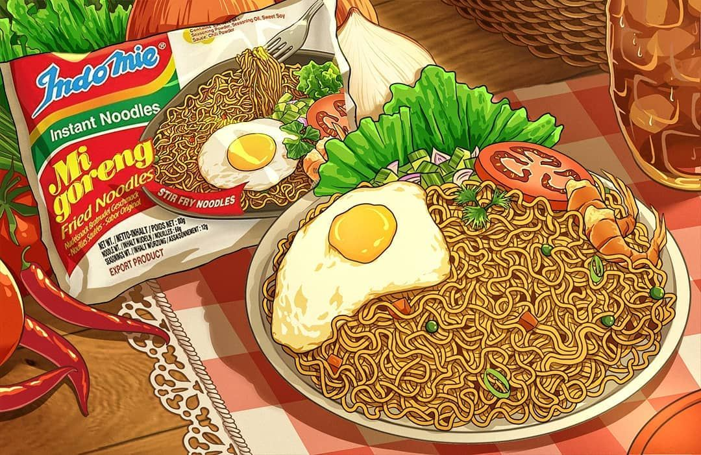

Indomie Goreng Recipes

Ingredients & Utensils
Utensils
- 1x plate/bowl
- 1x fork
- 1x saucepan
- 1x small frying pan (ideally an egg frying pan)
- 1x collander
Ingredients
- 1x packet of Indomie Mi Goreng
- 1x egg
- Some cooking oil for the egg(optional)
How to make Indomie Goreng
- Add 400mL of tap water to a saucepan, and bring to the boil on a stove.
- While you wait for the water to boil, add all the seasoning packets onto a plate, and mix.
- Heat some oil on the small frying pan, and crack an egg into it when it is hot enough.
- As soon as the water is boiled, add the noodle block in, and press it down with a fork so it becomes submerged in the water.
- Check the underside of the egg, and flip it when you think it is ready. (unless you like it sunny side up)
- Un-fold the noodle block with a fork and stir it a little. (It is essentially a long rectangular block that’s folded, so you want to unfold it to its full length)
- Cook the noodles for a total time of 3 minutes, or till your desired chewiness
- Pour the hot water and noodles into a collander in the sink and shake around a bit to drain excess water.
- Turn the heat off for the frying pan, move the frying pan to a separate stove.
- Pour the noodles into the plate and mix it around till the sauce is evenly distributed.
- Chuck the egg on top and you’re done
Sources
Home